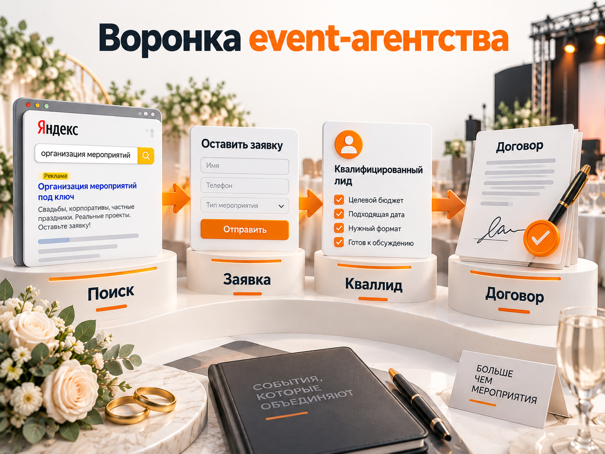

Блог о платном трафике
Продвижение event-агентства в Яндекс Директе
Яндекс Директ помогает агентствам праздников получать заявки на организацию свадеб, корпоративов, дней рождения и других мероприятий. Для этого нужно разделить услуги по аудиториям, подготовить отдельные предложения, запустить рекламу на Поиске и в РСЯ и отслеживать не только обращения, но и заключённые договоры.
Если задача заключается не в поиске заказчиков для агентства, а в привлечении гостей на конкретное мероприятие, рекламная стратегия будет другой. В этом случае продвигают само событие: конференцию, выставку, концерт, форум или онлайн-вебинар. Основной результат измеряют регистрациями, продажами билетов и фактическим количеством участников.
В опубликованных российских кейсах 2025-2026 годов стоимость заявки на организацию частного праздника составляла примерно от 965 до 2 648 ₽, а квалифицированного обращения на корпоративное мероприятие в Москве - около 6 730 ₽. Это результаты отдельных проектов, а не среднерыночные нормативы. Реальная стоимость зависит от региона, формата мероприятия, конкуренции, сайта и бюджета заказчика.
Как разделять рекламные стратегии для свадеб, частных праздников и корпоративов
Свадьбы, частные праздники и корпоративы лучше продвигать как разные услуги. У них отличаются заказчики, мотивация, цикл принятия решения и стоимость договора.
| Направление | Целевая аудитория | Что влияет на решение |
|---|---|---|
| Свадьбы | Молодожёны, иногда родители | Портфолио, стиль, доверие, бюджет свадьбы |
| Частные праздники | Семьи, родители, частные заказчики | Стоимость, программа, свободная дата |
| Корпоративы | HR, маркетологи, руководители, офис-менеджеры | Опыт B2B, смета, документы, сроки, масштаб |
Продвижение свадебного агентства
Для свадебного агентства я бы начинал с коммерческих запросов: «свадебное агентство», «организация свадьбы под ключ», «организатор свадьбы», «организация свадьбы Москва» и аналогичных формулировок с нужной географией.
На посадочной странице должны быть реальные свадьбы, фотографии, видео, отзывы, информация о команде и примерные бюджеты. В этой нише потенциальный клиент покупает не просто организацию мероприятия, а уверенность в результате.
У агентств с высоким минимальным бюджетом полезно указывать ценовой сегмент сразу. Например, если компания не организует свадьбы дешевле определённой суммы, посетитель должен понимать это до отправки заявки.
В РСЯ стоит тестировать реальные фотографии мероприятий, разные стили оформления и конкретные предложения, а не универсальные изображения праздничных столов.
Реклама организации частных праздников
При продвижении дней рождения, юбилеев и детских праздников акцент смещается на конкретную программу, стоимость и возможность заказать мероприятие на определённую дату.
Здесь хорошо подходят запросы:
- организация дня рождения под ключ;
- заказать детский праздник;
- организация юбилея;
- агентство по организации праздников;
- организация праздника на день рождения;
- проведение детского дня рождения.
Для рекламы желательно подготовить отдельные страницы под наиболее востребованные услуги.
Например, человек, который ищет организацию детского дня рождения, должен увидеть подходящие программы, возрастные категории, фотографии, продолжительность праздника и условия заказа.
Слишком общая страница агентства может проигрывать специализированному предложению даже при хорошей настройке рекламы.
Продвижение корпоративных мероприятий
Реклама корпоративов отличается от свадеб и частных праздников прежде всего B2B-аудиторией.
Заказчиком может быть HR-специалист, руководитель маркетинга, административный директор или собственник компании. Часто решение требует согласования с несколькими людьми.
Для Поиска подходят запросы:
- организация корпоративных мероприятий;
- организация корпоратива под ключ;
- event-агентство для компаний;
- заказать корпоратив;
- организация новогоднего корпоратива;
- организация тимбилдинга.
На сайте я бы показывал выполненные корпоративные проекты, количество участников, форматы, технические возможности и порядок работы.
Отдельно стоит обозначить подготовку сметы, работу по договору, безналичную оплату и закрывающие документы.
Для корпоративного направления стоимость квалифицированного обращения важнее количества обычных заявок. Дешёвый запрос на праздник для небольшой компании может быть бесполезным агентству, которое занимается масштабными мероприятиями.
Что показывают реальные кейсы рекламы event-услуг
В открытых кейсах Яндекс Директа результаты по организации мероприятий заметно различаются. Причём авторы используют разные определения конверсии.
В кейсе свадебного агентства Москвы и Московской области, обновлённом в марте 2026 года, до оптимизации лид обходился дороже 6 000 ₽. После переработки рекламы на первый месяц выделили около 300 000 ₽ и получили 128 конверсий.
Расчётная стоимость конверсии:
300 000 / 128 = 2 344 ₽.
В этом проекте РСЯ оказалась почти вдвое эффективнее Поиска по стоимости конверсии. Авторы не выявили существенной разницы в качестве поступавших обращений.
Другой опубликованный кейс по организации частных праздников показал снижение стоимости заявки с 2 692 до 965 ₽. После переработки кампаний было получено 173 лида. Одним из важных изменений стало исправление аналитики и связи с CRM.
В Ярославле за август 2026 года реклама организации праздников принесла 11 заявок при расходе 29 126 ₽. Расчётный CPL составил 2 648 ₽.
Для корпоративного направления есть другой пример. В Москве за октябрь 2025 года при расходе 87 488 ₽ получили 13 квалифицированных лидов. Стоимость одного такого обращения составила около 6 730 ₽.
Сравнивать эти цифры как одинаковые лиды нельзя. Отправленная форма, квалифицированный запрос на организацию корпоратива и подписанный договор представляют разные этапы продаж.
Главный вывод: рекламную экономику event-агентства нужно рассчитывать отдельно для каждой услуги, а не ориентироваться на одну усреднённую стоимость заявки.
Спрос и сезонность рекламы мероприятий
Для организации свадеб существует как прямой коммерческий, так и большой сопутствующий информационный спрос.
В опубликованном обзоре Wordstat за август 2026 года приводились ориентиры около 6,7 тыс. показов по запросу «свадебное агентство» и около 487 показов по более узкой формулировке «организация свадьбы под ключ». Эти числа относятся к запросам в конкретной статистической выборке, а не к количеству потенциальных покупателей.
Проблема широких запросов заключается в том, что пользователь может искать фотографа, ведущего, ресторан, свадебное платье, сценарий или самостоятельную организацию мероприятия.
Поэтому необходимо регулярно проверять реальные поисковые фразы и исключать нерелевантные направления.
Сезонность тоже различается.
Свадебные мероприятия чаще проходят в тёплое время года, но поиск организаторов начинается заранее. Следовательно, усиливать рекламу нужно до наступления пикового сезона.
Корпоративное направление получает дополнительный спрос перед Новым годом, а также к профессиональным праздникам и датам корпоративных событий.
Дни рождения и частные праздники могут давать более равномерный спрос, хотя отдельные праздничные периоды тоже влияют на активность аудитории.
Я бы не распределял годовой рекламный бюджет одинаково по месяцам. Лучше учитывать сезонность конкретной услуги и статистику предыдущих лет.
Какие рекламные каналы подходят event-агентству
Для получения заказов на организацию мероприятий я бы в первую очередь тестировал Поиск Яндекса и РСЯ. Поиск помогает работать с уже сформированным спросом, а РСЯ позволяет показывать визуальные предложения людям, которые могут заинтересоваться услугой.
| Канал | Аудитория | Особенности рекламы | Пример бюджета |
|---|---|---|---|
| Поиск Яндекса | Люди, которые ищут организатора | Коммерческие запросы, конкретная услуга и география | 45 000 ₽ |
| РСЯ | Потенциальные заказчики праздников | Фотографии, видео, аудитории по интересам, разные офферы | 25 000 ₽ |
| Ретаргетинг в РСЯ | Посетители сайта без заявки | Возврат заинтересованной аудитории, портфолио, напоминание | 10 000 ₽ |
| Всего | Пример тестового распределения | 80 000 ₽ |
Это условная структура бюджета для агентства, которое запускает рекламу одного основного направления. Распределение по каналам не является нормативом и должно корректироваться по фактическому спросу и результатам.
При небольшом количестве посетителей сайта ретаргетинг может не израсходовать выделенную сумму. В таком случае бюджет разумнее перенести на другие работающие кампании.
Мастер кампаний можно использовать как дополнительный эксперимент. Но я бы не строил продвижение исключительно на автоматическом подборе аудиторий без возможности анализировать качество обращений.
Для локального агентства также полезно заполнить карточку Яндекс Бизнеса: указать услуги, фотографии, контакты и отзывы. При подходящей категории бизнеса можно тестировать доступные размещения в Картах и Галерее услуг.
Как настроить Яндекс Директ для агентства праздников
Настройку Яндекс Директа стоит начинать с разделения услуг, анализа поискового спроса и определения конечной цели рекламы.
Семантика и поисковые запросы
На старте следует собирать прежде всего коммерческие фразы, в которых человек ищет организатора, а не информацию о празднике.
Например, запрос «сценарий свадьбы своими руками» не равнозначен запросу «организация свадьбы под ключ».
В качестве начальных направлений исключений можно проверять слова, связанные с вакансиями, самостоятельной организацией праздников, поздравлениями, сценариями, бесплатными материалами и обучением профессии организатора.
Но исключать каждое такое слово без анализа нельзя: некоторые формулировки могут встречаться и в полезных коммерческих запросах.
Отдельные предложения и рекламные группы
Свадьбы, корпоративы и детские праздники не стоит продвигать одинаковыми объявлениями.
Для свадьбы уместно подчёркивать опыт агентства, портфолио и организацию под ключ.
Для детского праздника важнее программа, возраст детей, стоимость и свободные даты.
Для корпоративов можно делать акцент на опыте проведения мероприятий для компаний, масштабе проектов и подготовке сметы.
При достаточном объёме бюджета направления разумно разделять по кампаниям. Если статистики мало, излишнее дробление может помешать обучению автоматических стратегий.
Креативы для РСЯ
РСЯ особенно интересна для event-сферы из-за визуального характера услуги.
Я бы тестировал не абстрактные праздничные фотографии, а реальные материалы из портфолио: оформленные площадки, готовые декорации, корпоративные мероприятия и фрагменты праздничных программ.
В Единой перфоманс-кампании Яндекс Директа в 2026 году используются комбинаторные объявления, позволяющие загружать несколько вариантов заголовков, текстов, изображений и видео.
Система подбирает сочетания элементов для разных рекламных показов. Это позволяет тестировать несколько предложений без создания большого количества однотипных объявлений.
Однако автоматический подбор не заменяет анализ качества заявок и проверку рекламных сообщений.
Выбор стратегии
Я бы не начинал с автоматического ограничения стоимости конверсии по слишком низкой цене.
Если агентство получает мало обращений, алгоритм может испытывать недостаток статистики. Особенно это актуально для дорогостоящих корпоративов и редких свадебных заказов.
Сначала нужно определить бюджет, получить достаточно данных о посещениях и обращениях, а затем выбирать оптимизацию на более глубокие конверсии.

О выборе модели управления рекламой подробнее написано в статье «Какую стратегию выбрать в Яндекс Директ».
Какой сайт нужен агентству праздников для получения заявок
Посадочная страница должна соответствовать конкретному направлению рекламы. Универсальный сайт с перечислением всех видов мероприятий обычно хуже отвечает на запрос, чем специализированная страница услуги.
Для агентства с несколькими направлениями я бы рекомендовал как минимум отдельные страницы организации свадеб, корпоративных мероприятий и частных праздников.
На каждой странице должны быть:
- конкретное предложение и перечень услуг;
- реальные фотографии и видео мероприятий;
- информация о форматах и количестве участников;
- стоимость или минимальный бюджет, если его можно обозначить;
- примеры реализованных проектов;
- отзывы и информация об агентстве;
- понятная форма заявки или запроса сметы.
Для корпоративов полезно добавить описание работы с юридическими лицами и документы. Для свадеб больше внимания стоит уделить портфолио, стилю и процессу подготовки. Для детских праздников - программам и условиям заказа.
Не рекомендую делать форму с большим количеством обязательных полей. На первом этапе достаточно запросить информацию, необходимую для расчёта: тип мероприятия, дату, город, примерное количество гостей и контакт заказчика.
Как привлекать гостей на офлайн-мероприятие
Привлечение гостей на офлайн-мероприятие требует рекламы конкретного события, а не услуг event-агентства. Основная задача - получить нужное количество реальных участников конференции, выставки, форума, концерта или другого события к установленной дате.
Здесь важно сразу определить, является мероприятие бесплатным или платным, сколько человек необходимо привлечь и какую аудиторию организатор хочет видеть.
Где искать потенциальных участников
Для мероприятий со сформированным поисковым спросом имеет смысл использовать Поиск Яндекса.
Например:
- билеты на выставку в Москве;
- бизнес-конференция по маркетингу;
- форум для предпринимателей;
- выставка недвижимости;
- купить билет на концерт.
Но для нового мероприятия, о котором аудитория пока не знает, прямого поискового спроса может почти не быть.
В таком случае я бы в первую очередь тестировал РСЯ и аудитории по тематическим интересам. Дополнительно могут работать тематические сообщества, партнёрские рассылки и размещения у профильных авторов.
Для профессионального форума важнее найти подходящих специалистов, чем просто получить максимальный охват.
Что должно быть на странице мероприятия
Рекламный переход должен вести на страницу конкретного события.
На ней необходимо показать:
- название и тему мероприятия;
- дату и время;
- город, адрес и площадку;
- программу и спикеров;
- стоимость участия или условия бесплатной регистрации;
- кому будет полезно мероприятие;
- понятный способ регистрации или покупки билета.
Для офлайн-событий география имеет особенно большое значение. Рекламировать однодневный региональный форум на всю Россию без обоснования обычно нецелесообразно.
Исключением могут быть крупные профессиональные мероприятия, ради которых аудитория готова приезжать из других городов.
Почему недостаточно считать регистрации
Если мероприятие бесплатное, часть зарегистрировавшихся людей может не прийти.
Поэтому необходимо отслеживать не только стоимость регистрации, но и долю фактических посетителей.
Для платных мероприятий важнее оплаченные билеты, возвраты, средняя выручка с заказа и реальная посещаемость.
Бесплатная регистрация и оплаченный билет не должны считаться одинаковой конверсией.
Практически полезно предусмотреть подтверждение регистрации, напоминания перед событием и возможность быстро получить билет или QR-код для входа.
Как привлечь участников на онлайн-мероприятие
Для онлайн-мероприятий Яндекс Директ можно использовать для получения регистраций на вебинары, обучающие марафоны, онлайн-конференции, презентации и прямые эфиры.
В отличие от офлайн-событий, реклама онлайн-мероприятия не обязательно ограничивается одним городом. Если продукт рассчитан на широкую аудиторию, географию можно расширять.
Основная рекламная стратегия зависит от темы.
Если люди уже ищут конкретное обучение или мероприятие, полезен Поиск. Для привлечения новой аудитории чаще приходится работать через РСЯ, тематические интересы и ретаргетинг.
Например, для бесплатного вебинара о продвижении бизнеса рекламное предложение должно объяснять, какой результат получит участник и почему ему стоит зарегистрироваться.
На посадочной странице важны тема, программа, спикер, дата, время и понятная регистрация.
Как оценивать результат онлайн-рекламы
Для бесплатного вебинара нужно отдельно считать регистрацию и фактическое участие.
Если мероприятие предназначено для последующей продажи продукта, потребуется отслеживать и следующие действия: обращения, консультации, заказы и оплаты.
В моём кейсе продвижения бесплатного онлайн-марафона по цигун через Telegram Ads рекламная воронка была ориентирована на регистрации. За отчётный период с сайта получили 71 целевой визит с регистрацией при рекламном расходе 78,04 евро.
Это пример 2024 года из другого рекламного канала, поэтому переносить стоимость регистрации на Яндекс Директ или использовать её как актуальную рыночную норму нельзя. Но сама методика разделения рекламного перехода, регистрации и дальнейшего результата применима и к онлайн-мероприятиям.
Какой рекламный бюджет нужен event-агентству
Для первоначального медиаплана по организации мероприятий я бы использовал разные рабочие ориентиры в зависимости от услуги.
| Направление | Расчётный ориентир CPL | Тестовый рекламный бюджет |
|---|---|---|
| Частные праздники | 1 500-3 000 ₽ за обращение | 30 000-60 000 ₽ |
| Организация свадеб | 2 500-6 000 ₽ за обращение | 50 000-100 000 ₽ |
| Корпоративные мероприятия | 5 000-9 000 ₽ за квалифицированный лид | 80 000-150 000 ₽ |
Это ориентировочная модель для первоначального планирования, а не статистика средних цен по рынку. Она опирается на разброс опубликованных результатов, но требует проверки по региону, сезонности и конкретному предложению.
Для Москвы бюджеты могут быть выше, особенно в корпоративном сегменте. В небольших городах иногда можно запускать рекламу с меньшими расходами, но объём доступного спроса тоже будет ограничен.
Главная проблема слишком маленького тестового бюджета заключается в недостатке данных.
Например, при условной стоимости лида 4 000 ₽ и бюджете 20 000 ₽ можно рассчитывать всего на пять обращений. Этого мало для объективного вывода об эффективности направления.
При бюджете 80 000 ₽ и той же стоимости лида расчётное количество обращений составит 20.
Это не гарантированный результат, а математическая модель.
Если из 20 обращений только четыре превращаются в договоры, стоимость привлечения одного клиента составит 20 000 ₽.
Поэтому оценивать бюджет необходимо с учётом прибыли от организованного мероприятия, а не только стоимости заявки.
Как рассчитать бюджет под нужное количество заказов
Для расчёта рекламного бюджета event-агентства сначала нужно определить план по заключённым договорам, затем оценить конверсию обращений в продажи и ожидаемый CPL.
Предположим, агентству требуется 10 новых заказов.
Если в договор превращается 20% полученных обращений, потребуется:
10 / 0,20 = 50 лидов.
При стоимости обращения 3 500 ₽ рекламный бюджет составит:
50 × 3 500 = 175 000 ₽.
Если фактическая конверсия в договор окажется не 20%, а 10%, потребуется уже 100 обращений.
При том же CPL бюджет вырастет до 350 000 ₽.
Из этого следует, что качество обработки обращений непосредственно влияет на экономику рекламы.
Для контроля я бы использовал три показателя:
- CPL - рекламные расходы, разделённые на количество лидов.
- Стоимость квалифицированного лида - расходы, разделённые на количество подходящих обращений.
- CAC - расходы на привлечение, разделённые на количество новых клиентов. В данном расчёте учитываются рекламные расходы; при расчёте полного CAC нужно добавить остальные затраты на привлечение.
О том, почему нельзя ориентироваться на чужие средние показатели продаж, подробнее написано в статье «Конверсия лидов в продажи».
Как рассчитать бюджет на привлечение гостей
Бюджет рекламы мероприятия рассчитывается от количества необходимых участников, стоимости регистрации и ожидаемой явки.
Для бесплатного офлайн-мероприятия важно учитывать, что число регистраций обычно отличается от фактического количества пришедших людей.
Рассмотрим условный пример.
Организатору необходимо получить 200 гостей. По рабочему предположению, на мероприятие придут 70% зарегистрировавшихся.
Необходимое количество регистраций:
200 / 0,70 = 286 регистраций, с округлением вверх.
Предположим, по предварительной оценке стоимость регистрации составляет 400 ₽.
Тогда рекламный бюджет:
286 × 400 = 114 400 ₽.
Все параметры примера условные: 70% явки и 400 ₽ за регистрацию не являются рыночными нормативами. При другой стоимости регистрации или доле явки бюджет изменится.
Для платного мероприятия методику необходимо дополнить экономикой продажи билетов.
Например, если билет стоит 3 000 ₽, но организатор может потратить на рекламу не более 600 ₽ с продажи, именно 600 ₽ становится предельной рекламной стоимостью проданного билета при заданных условиях.
При этом нужно учитывать комиссию билетной платформы, себестоимость обслуживания посетителя, возвраты и другие расходы.
Для онлайн-мероприятия применяется похожая модель, но вместо физического посещения учитывается фактическое подключение к трансляции или прохождение запланированного этапа программы.
Что настроить в аналитике перед запуском рекламы
Для event-агентства и организатора конкретного мероприятия нужны разные наборы целевых действий.
| Задача | Первичная цель | Конечный результат |
|---|---|---|
| Продвижение event-агентства | Заявка на организацию | Подписанный договор |
| Реклама корпоратива | Запрос сметы | Договор с компанией |
| Бесплатное офлайн-мероприятие | Регистрация гостя | Фактическое посещение |
| Платное мероприятие | Начало покупки билета | Оплаченный билет и посещение |
| Бесплатный онлайн-вебинар | Регистрация | Фактическое участие |
| Продающий вебинар | Регистрация | Продажа продукта |
Для агентства по организации мероприятий желательно передавать в CRM тип события, дату, количество гостей, ориентировочный бюджет заказчика, статус лида и сумму сделки.
Для конференции или выставки дополнительно понадобится учёт регистраций, оплаты и фактического присутствия.
В Яндекс Метрику можно передавать офлайн-конверсии и данные о заказах из CRM, чтобы анализировать результаты, которые произошли после посещения сайта.
Подробнее процесс описан в статье «Офлайн-конверсии в Яндекс Директ и Метрике».
Я бы не оптимизировал рекламную кампанию сразу на самое редкое событие, например подписанный договор или посещение конференции. Если таких действий мало, алгоритму будет недостаточно данных.
Выбирать нужно наиболее глубокую полезную цель, по которой одновременно собирается достаточная статистика.
Типичные ошибки продвижения агентства праздников
Одна рекламная кампания на все направления. Разные аудитории получают одинаковые объявления, а статистика по услугам смешивается. Это затрудняет управление бюджетом и оценку результата.
Слишком широкие поисковые запросы. Объявления показываются людям, которые ищут ведущего, ресторан, сценарий или самостоятельную организацию праздника, а не услуги агентства.
Отсутствие минимального бюджета мероприятия. Менеджеры получают много обращений, но значительная часть заказчиков не соответствует ценовому сегменту компании.
Реклама без портфолио. Клиент видит обещания организовать красивый праздник, но не получает доказательств опыта агентства.
Оптимизация только по стоимости заявки. Кампании приводят дешёвые обращения, но большинство не превращается в договоры.
Смешение заказчиков и участников мероприятий. Агентство запускает рекламу, не определив, нужно ли получить договор на организацию события или собрать аудиторию уже запланированного мероприятия.
Отсутствие контроля сроков. Для рекламирования конкретной конференции или выставки важно учитывать дату мероприятия. Нельзя оценивать такое продвижение по тем же временным принципам, что и постоянно работающую рекламу агентства.
Как запустить рекламу event-агентства: пошаговый план
Я бы организовал запуск в следующем порядке:
- Определить главную цель: получение заказов на организацию мероприятий или привлечение гостей.
- Разделить услуги и аудитории по направлениям.
- Изучить поисковый спрос, конкурентов и сезонность.
- Рассчитать допустимую стоимость лида или участника.
- Подготовить соответствующие посадочные страницы.
- Настроить Метрику, необходимые цели и передачу данных в CRM.
- Запустить Поиск по прямым коммерческим запросам, если спрос существует.
- Подготовить отдельные креативы для РСЯ.
- Проанализировать поисковые фразы, площадки, обращения и реальные результаты.
- Перераспределить бюджет между эффективными направлениями и аудиториями.
Для агентства с несколькими услугами важно оценивать не только общую эффективность рекламного кабинета, но и результат каждого направления.
Для конкретного мероприятия дополнительно нужно контролировать скорость набора регистраций, фактическую посещаемость и остаток времени до события.
Настройка и ведение рекламы event-агентства
Я занимаюсь настройкой и ведением Яндекс Директа более 10 лет. Работаю напрямую с заказчиками как индивидуальный предприниматель, по договору и с закрывающими документами.
Стоимость моих услуг начинается от 30 000 ₽ в месяц. Рекламный бюджет оплачивается отдельно.
В работу входит анализ спроса, оценка посадочной страницы, подготовка структуры рекламных кампаний, настройка аналитики, запуск рекламы и дальнейшая оптимизация.
При продвижении агентства праздников основное внимание уделяется качеству обращений и стоимости заключённого договора.
Если задача заключается в привлечении участников на мероприятие, рекламная стратегия и KPI определяются исходя из стоимости регистрации, продажи билета или фактического посещения.
Среди моих опубликованных проектов есть продвижение бесплатного онлайн-марафона, где ключевой задачей был набор регистраций, и масштабирование онлайн-фотошколы, где реклама вела на бесплатный урок и последующую продажу обучения.
Такие проекты показывают особенности рекламы с регистрацией в качестве первого целевого действия, хотя их результаты нельзя напрямую переносить на организацию свадеб или корпоративов.
Подробнее о формате сотрудничества можно прочитать на странице «Контекстная реклама под ключ».
Итог
Яндекс Директ подходит для продвижения event-агентств, организации праздников и привлечения участников на конкретные мероприятия. Но рекламная стратегия зависит от того, какой результат требуется получить.
Для свадеб, корпоративов и частных праздников важно работать с коммерческим спросом, показывать реальные проекты и оценивать стоимость заключённого договора.
Для офлайн-мероприятий основным результатом могут быть оплаченные билеты и фактическое количество гостей. Для онлайн-вебинаров и конференций - регистрации, участие и дальнейшие продажи.
Во всех случаях эффективность рекламы определяется не количеством кликов и не минимальной стоимостью заявки, а достижением конкретной бизнес-цели при приемлемом бюджете.